AI 시대, 창작의 정의를 다시 묻다 (1) 실력과 노력의 가치는 어디로 가는가
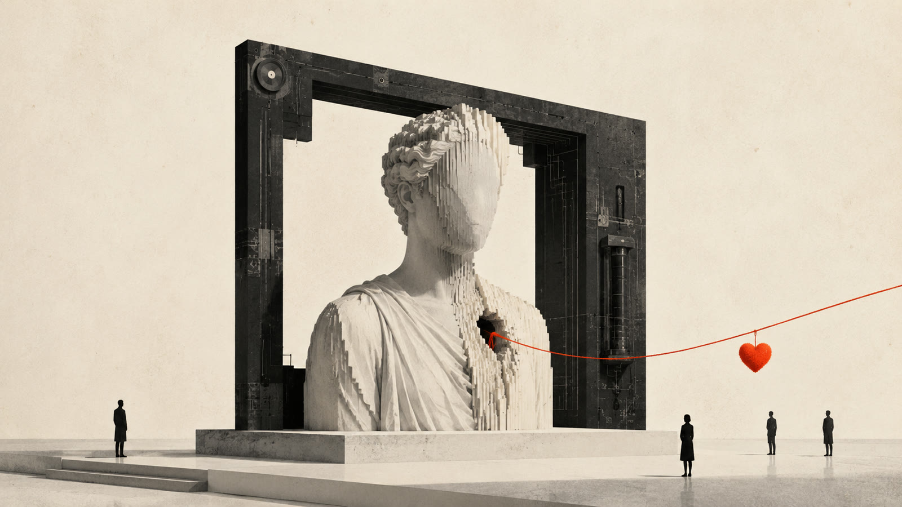
발표자료는 시간이 지나면 낡는다. 몇 달만 지나도 모델 이름이 바뀌고, 어제 놀라웠던 데모가 오늘은 기본 기능이 된다. 그런데 다시 열어보니 낡지 않은 것이 하나 있었다. 질문이다. AI가 웬만한 창작 실력보다 뛰어난 결과물을 만들어내는 시대에, 우리가 오래 믿어온 실력과 노력이라는 가치는 어디로 가는가. 나는 발표 제목 옆에 그 문장을 적어두었는데, 아직 낡지 않았고 오히려 그때보다 더 무거워진 것 같다.

시리즈 안내 : 2025년 11월, 한 기업의 초청을 받아 임직원 워크숍에서 "AIGC 시장 트렌드 및 창작자 패러다임의 변화"라는 제목으로 발표를 했다. 162장의 슬라이드와 55개의 영상을 만들었고, 발표 전날 새벽 4시까지 새로 나온 것들을 써보다가 장표에 반영했다. 이 글은 그 발표를 몇 달 지나 다시 정리하는 세 편의 노트 중 첫 번째다.
01무엇이든 생성 가능한 시대라는 말
발표를 이 영상으로 열었다. 거리에 이미지가 쏟아져 나오고, 사람이 그 위를 밟고 지나가는 광고다.

이 광고를 만든 회사는 Freepik이다. 나는 이 툴을 열심히 사용하는 사용자이기도 하다. 원래는 라이선스가 해결된 스톡 이미지를 검색해서 쓰게 해주던 회사였다. 그런데 그 라이선스 해결된 데이터를 학습시켜 자체 생성 모델을 만들더니, 이제는 최신 외부 모델들까지 API로 통합해서 크레딧 기반으로 골라 쓰게 하는 곳이 되었다. 이미지를 찾는 곳이었는데, 이미지를 만들어내는 환경이 된 것이다.
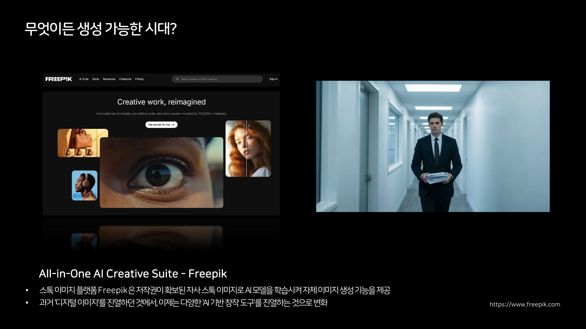
업계에서는 "딸깍"이라는 표현을 많이 쓴다. 딸깍하면 배너가 나오고, 웹사이트가 나온다. 창작 과정이 그렇게 축약된다. 다만 공짜는 아니다. 최신 모델 하나를 클릭할 때 드는 크레딧이 옛날 모델의 20배, 100배까지 차이가 난다. 무엇이든 생성 가능한 시대라는 말은 절반만 맞다. 생성은 쉬워졌지만, 무엇을 어느 모델로 왜 만들지 고르는 일은 오히려 더 복잡해졌다.
02창작자는 대체되는가, 아니면 확장되는가
발표에서 이 질문을 분야별로 던졌다. 미술에서는 Midjourney로 만든 그림이 공모전에서 1등을 하고, AI로 만든 것이 밝혀지며 취소되는 일이 2022년 무렵 벌어졌다. 음악은 지금 더 시끄럽다. 나는 음악 평론가, 제작자 분들과 같이 일을 많이 하는데, 현장의 반응은 분노와 감탄이 섞여 있다. 이미 너무 훌륭해서 그대로 가져다 쓰면 되겠다는 말이 나올 정도다.
그 와중에 실제 수익을 만드는 레이블 단위에서 AI 아티스트와 계약을 맺는, 쇼 같은 해프닝도 있었다. 2025년 7월 미국의 인디 레이블과 정식 계약을 맺은 ImOliver가 그 사례다. 세계 최초로 음악 레이블과 계약한 AI 음악 디자이너라는 수식이 붙었다. 발표에서 나는 이 계약의 수익 구조를 이렇게 설명했다. 결국 여러 이해관계자가 나눠 갖게 될 것이다. AI는 은행 계좌가 없고, 소득을 신고할 수 없기 때문에.
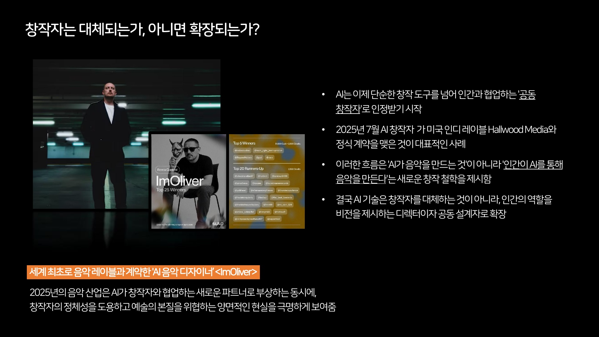
장표에는 이 사례를 이렇게 정리해뒀다. 이 흐름은 AI가 음악을 만드는 것이 아니라 인간이 AI를 통해 음악을 만든다는 이야기이고, 그래서 AI는 창작자를 대체하는 것이 아니라 인간의 역할을 비전을 제시하는 디렉터이자 공동 설계자로 확장한다고. 지금 다시 읽어보니 그때의 나는 이 정리를 조금 편하게 적은 것 같다. 바로 다음에 이야기할 사례들을 보고 나면 확장이라는 말이 그렇게 쉽게 쓰이지 않는다.
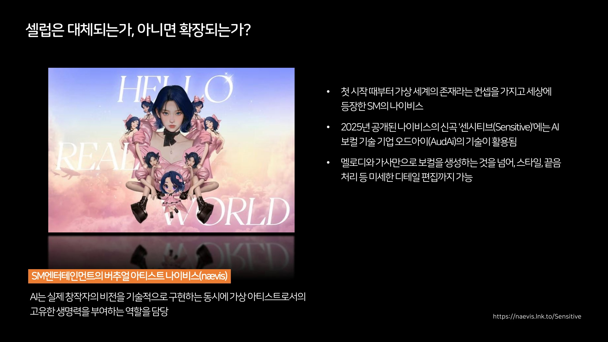
Suno 같은 플랫폼에서는 점 하나 찍고 "안녕"이라고만 써도 트렌디한 음악이 나온다. 발표 당시 나는 Suno로 만들어진 가상 아티스트가 빌보드 1위를 차지해 논란이 된 사례를 소개했다. 1위까지는 예상 못 했다는 반응이 많았지만, 내가 더 흥미롭게 본 것은 댓글이었다. AI인지 구분하지 못하는 사람들이 "월드투어 언제예요"라고 묻고 있었다.
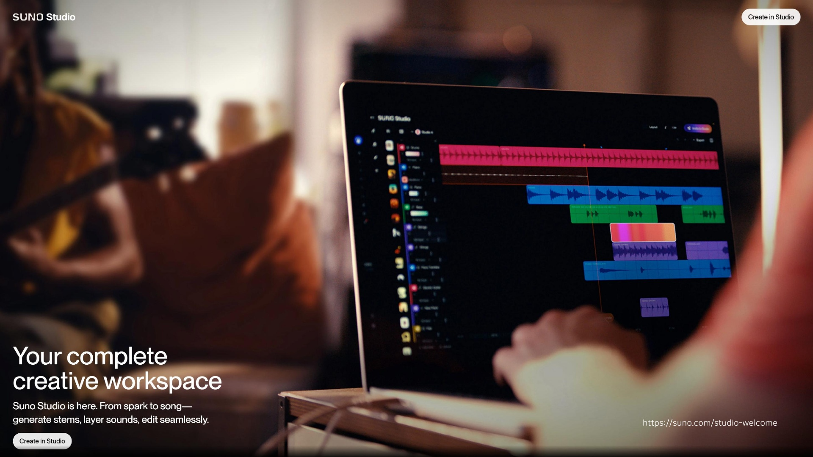
장표에는 장르 키워드가 길게 펼쳐진 화면도 같이 넣었다. 세 단어, 네 단어씩 묶인 그 목록은 우리가 아는 음악 장르 이름이 아니라 개인이 자기 취향대로 조합해 만든 것들이었다. 장르가 산업의 분류였다면, 지금은 각자가 자기 분류를 만들어 쓰는 쪽으로 가고 있는 것 같다.
그리고 문제의 축이 한 번 이동한다. 어느 인디 뮤지션이 어느 날 축하 메시지를 받는다. 앨범 나왔더라, 축하해. 그는 앨범을 낸 적이 없다. 스트리밍 플랫폼에서 자기 이름을 검색했더니, 자기 얼굴과 이름으로 새 앨범이 올라가 있었다. 플랫폼의 안전장치는 허술했다. 여기서 사람들이 화가 난 지점은 "AI가 콘텐츠를 만들었다"가 아니었다. "AI가 사람인 척을 한다", 심지어 현존하는 실제 사람인 척을 한다는 것이었다.
대체냐 확장이냐는 질문은 그래서 조금 이르다는 생각이 든다. 그 전에, 창작물과 창작자를 묶어주던 연결 자체가 풀리고 있다.
03진정성도 생성될 수 있다
발표에서 광고 영상을 하나 틀고 물었다. 이 광고, 잘 만들어졌나요. 가치가 얼마쯤 될까요. 청중 대부분이 무덤덤한 표정이었다. 그리고 말했다. 이 영상은 AI로 만든 게 아니에요.

70년대 헤리티지를 오마주해서 세트를 만들고 촬영한 광고인데, 올리자마자 "AI로 만든 거네"라는 댓글이 달렸다. 제작자는 화가 나서 SNS에 장문의 글을 올렸다. 스케치가 어땠고, 바람은 어떻게 날렸고, 한 땀 한 땀 어떻게 만들었는지. 수백 명의 아티스트가 수개월에 걸쳐 실제로 지은 세트라는 것이 그 해명의 요지였다.
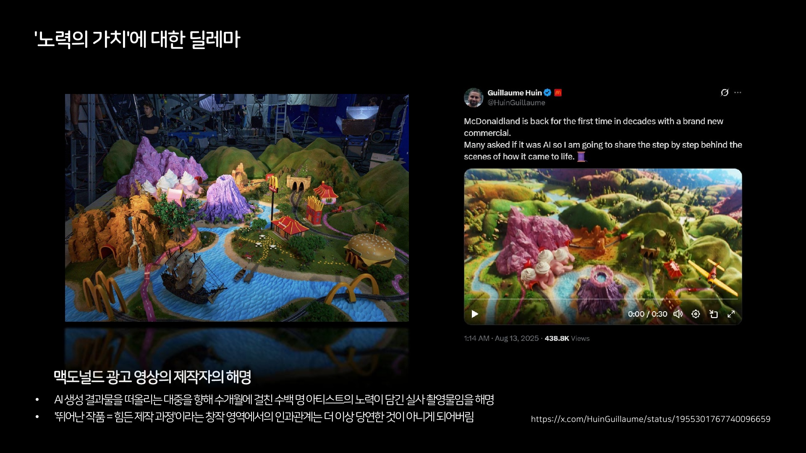
나는 이 장면이 발표 전체에서 가장 중요한 대목이라고 생각했다. 아무리 많은 시간과 노력과 비용을 들여도, 진정성을 따로 증명하지 않으면 사람들은 더 이상 그것을 구분하려 하지 않는다. 특별한 가치를 부여하지 않는다. 만드는 일과 만들었음을 설득하는 일이 별개의 과제가 된 셈이다.
여기서 한 번 더 꼬아서 물었다. 그 증명은 믿을 수 있는 것인가. 이건 나의 실무이기도 하다. 나는 최종 캐릭터를 먼저 만들고, 팬들에게 보여줄 초기 스케치와 제작 과정을 AI로 역순으로 만드는 일을 실제로 하고 있다. 일부러 초기 버전을 일그러뜨리고 일관성을 떨어뜨려서, 진짜 과정처럼 보이는 에셋들을 만들어 배포한다. 진정성 자체를 생성할 수 있는 시대로 가고 있는 것이다. 그러니 결과물 안에서는 이제 어느 것도 판단 근거가 될 수 없다는 생각이 들었다.
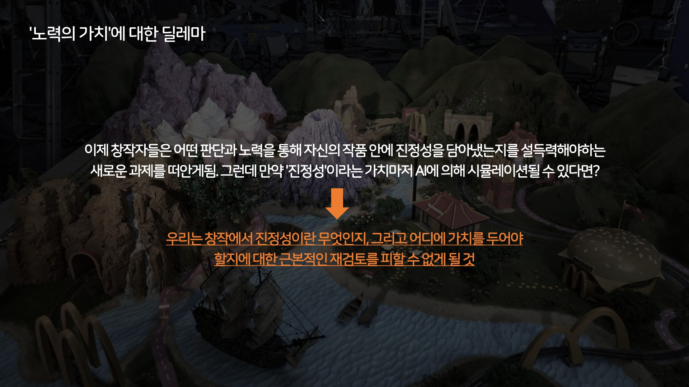
장표에는 이렇게 적어뒀다. 이제 창작자들은 어떤 판단과 노력을 통해 자신의 작품 안에 진정성을 담아냈는지를 설득해야 하는 새로운 과제를 떠안게 됐다. 그런데 만약 진정성이라는 가치마저 AI에 의해 시뮬레이션될 수 있다면. 그러면 우리는 창작에서 진정성이란 무엇인지, 그리고 어디에 가치를 두어야 할지를 근본부터 다시 검토할 수밖에 없게 될 것이다. 발표에서는 이 질문을 던져놓고 답하지 않은 채로 1부를 닫았다. 지금도 답을 갖고 있지는 않다.
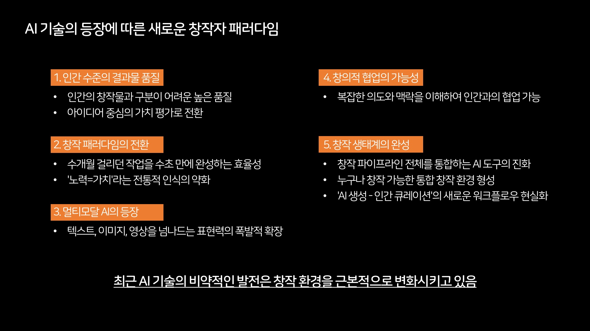
노력이 사라진다는 이야기가 아니다. 다만 노력이 결과물에 자동으로 새겨지던 시대가 끝나가는 것 같다. 개인적으로는, 앞으로 창작자의 노력은 결과물 바깥에서, 어떤 선택을 왜 했는지 설명하는 언어로 다시 증명될 수밖에 없다고 본다. 그 설명까지도 생성될 수 있다는 것이 이 시대의 곤란함이지만.
04도구가 아니라 미디어라는 관점
발표 1부를 마치며 관점을 하나 제안했다. 지금까지 AI를 창작 도구, 생산성 도구, 비용 절감 도구로 봤다면, 이제 AI를 새로운 형태의 미디어로 봤으면 한다고. 이 관점은 내가 처음 꺼낸 것이 아니다. 런웨이의 대표 크리스토발 발렌수엘라가 쓴 글 <A New Medium>에서 가져왔고, 장표에도 그 인용을 그대로 실었다.
이 관점은 책상에서 나온 것이 아니라, 써보다가 나온 것이다. 나는 쇼러너(Showrunner)라는 생성형 쇼 플랫폼을 초기 베타부터 계속 써보고 있다. 하나의 가상 세계가 있고, AI로 학습된 캐릭터들이 IP처럼 존재하고, 그 캐릭터들을 캐스팅해서 쇼를 만들고 퍼블리싱까지 한다. 이 화면을 보면 떠오르는 것이 하나 있다. 넷플릭스다. 다만 미래의 그 미디어에는 저장된 영상이 하나도 없다. 학습된 쇼의 형식이 있을 뿐이고, 5편까지 보고 나면 시즌2를 기다리는 게 아니라 내가 6편을 생성한다. 마음에 안 들면 폐기하고 다시 만들고, 마음에 드는 것이 나오면 친구들과 공유한다. 이런 서비스가 등장한 게 벌써 2년 전이고, 최근에 큰 투자를 받았다. 거실의 풍경이 바뀔 것이다. 아빠와 아이가 리모컨이 아니라 프롬프트 입력창을 두고 다투게 되겠지.
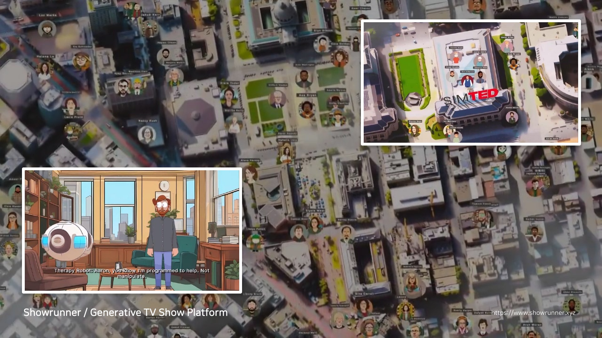
이 화면을 처음 봤을 때 든 생각은 도구가 좋아졌다가 아니었다. 채널이 하나 생겼다에 가까웠다. 여기서는 무엇을 만들 수 있느냐보다 어떤 세계에 들어가느냐가 먼저 온다. 그게 도구와 매체를 가르는 지점인 것 같다.
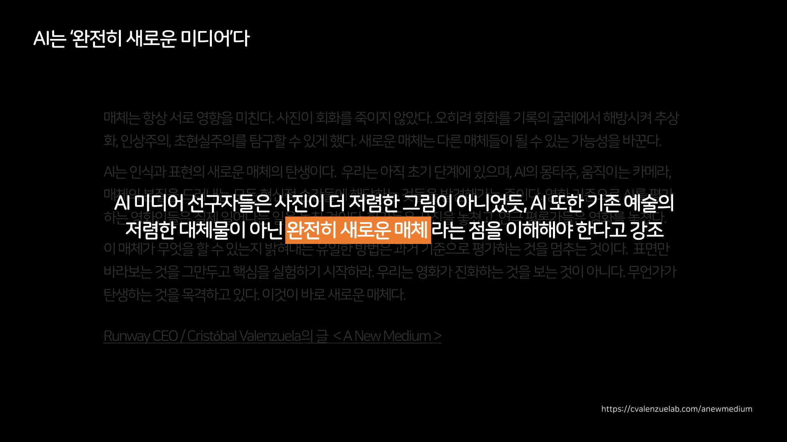
흥미로운 것은 이런 선언을 하는 주체가 바뀌었다는 점이다. 예전에는 미학자들, 미디어론 학자들이 새로운 매체를 정의하면 산업이 따라갔다. 지금은 산업의 CEO들이 자기 채널에 장문의 글을 올리면 학계가 받아 적는다. 기술이 철학까지 주도하고 있는 셈인데, 이게 건강한 순서인지는 잘 모르겠다. 다만 순서가 바뀌었다는 사실 자체는 분명해 보인다.
롱폼을 지향하는 서비스도 있다. 스크립트에 나레이션을 입히고 컷 단위 이미지로 3분에서 30분짜리 영상을 만들어주는데, 마음에 드는 컷만 골라 애니메이션으로 전환할 수도 있다. 반대편에는 숏폼이 있다. 위로 스와이프하면서 2초 보고 넘기는데, 그 콘텐츠들은 전부 AI가 앞 단계를 생성해둔 것들이고, 내가 어떤 액션을 하면 다음 단계가 생성되면서 수직으로 들어간다. 장르는 정의되어 있지 않다. 게임일 수도, 웹툰일 수도, 영화일 수도 있다. 최근에는 여기에 개인의 장기 메모리를 엮어서, 휘발되던 숏폼 경험이 나만의 엔터테인먼트 세계로 쌓이는 실험까지 나왔다.
기존 포맷을 컨버팅하는 데서 시작했던 서비스들이, 이제는 세상에 없던 무언가를 만들고 있다. 사람의 상상력은 여전히 쓸모가 있다는 생각이 들었다.
매체라는 말이 가장 실감 났던 자리는 따로 있다. 영상 생성 플랫폼 안에서 사람들이 서로의 결과물을 이어받아 만드는 광경이었다. 누군가 올린 장면을 다른 사람이 가져가 다음 장면을 만들고, 또 다른 사람이 거기서 갈라져 나간다. 혼자 만들어 내보내는 구조가 아니라, 하나의 장면이 여러 갈래로 자라는 구조다. 발표에서 나는 이것을 공동 창작 문화라고 불렀다.
도구였다면 이런 일이 벌어지지 않는다. 포토샵으로 만든 이미지가 남의 포토샵 안에서 저절로 이어지지는 않으니까. 결과물이 다음 사람의 재료가 되는 구조가 기본값으로 깔려 있다는 점에서, 이것은 도구의 성질이 아니라 매체의 성질에 가깝다고 봤다.
거기에 사람을 등장인물로 넣는 기능까지 붙었다. 프리셋을 몇 개 고르고 프롬프트를 넣어 영상을 만들면서, 특정 인물을 배역으로 세울 수 있다. 발표에서 나는 케이팝 아이돌을 소재로 만들어진 영상을 예로 들었다. 말투가 우리가 음악방송에서 보던 딱 그 느낌으로 나왔다. 전형적이라 웃긴데, 전형적이라는 건 그만큼 학습이 잘 됐다는 뜻이기도 하다. 원래 그 IP를 만든 쪽에서 보면 기분이 복잡할 것이다. 홍보가 되기도 하고, 동시에 손을 떠나기도 한다.
다만 그 재료가 대개 남의 것이라는 문제가 따라온다. 인기 있는 IP의 캐릭터들이 플랫폼 안에서 빠르게 재생산됐고, 권리를 가진 쪽은 당연히 반발했다. 발표 시점에 이 갈등은 정리되지 않은 상태였다. 기술이 먼저 가고 합의가 뒤따라가는 익숙한 순서인데, 이번에는 그 간격이 유난히 넓어 보였다.
반대로 움직인 곳도 있었다. 대형 스튜디오의 경영진이 인터뷰에서 이 흐름을 막기보다 끌어안겠다는 쪽으로 이야기했다. 발표에서 나는 그 발언을 소개하면서도 실행까지 갈지는 회의적이라고 덧붙였다. 이 이야기는 3편의 질문 코너에서 한 번 더 나온다.
05콘텐츠가 관계가 될 때
새로운 미디어라는 관점을 밀고 가면, 콘텐츠는 감상의 대상에서 관계의 상대로 옮겨간다.
캐릭터챗 서비스들이 그 앞자리에 있다. 나는 이 장르의 서비스를 거의 다 써보고 있다. 이런 것을 많이 연구해서 기능들을 활용하고 있기 때문이다. 세계관을 만들고, 캐릭터를 만들고, 다른 사람이 만든 캐릭터와 대화하는 기본 구조는 비슷하지만, 어떤 방에서는 케이팝 아이돌 시뮬레이션 같은 것이 돌아간다. 템플릿에 이름을 넣고, 미션을 하나씩 해결하다 보면 TRPG를 하는 것 같은 경험이 되고, 한 세트가 끝나면 그 기록이 한 편의 웹소설처럼 남는다. 혼자 쓰라고 하면 절대 못 쓸 글이 실시간 대화 속에서 만들어져 있는 것이다.

발표에서 나는 어느 컴패니언 캐릭터의 사례를 보여주며 이렇게 정리했다. 이것은 생산성 툴이면서, IP이면서, 팬덤 비즈니스까지 세 가지를 다 갖춘 존재라고. 사람들은 이미 그 캐릭터의 일러스트를 그리고 코스프레를 한다. 콘텐츠를 소비하는 것이 아니라 캐릭터와 관계를 맺고, 그 관계가 다시 2차 창작이라는 콘텐츠를 낳는다.
관계로 넘어가는 통로가 캐릭터 쪽에만 있는 것은 아니다. 발표 무렵에는 여러 사람이 함께 쓰는 대화방에 AI가 참여자로 들어오는 기능이 나왔다. 둘이 주고받던 구도에서 여럿이 있는 자리로 옮겨오면, AI는 내가 부리는 도구라기보다 그 자리에 함께 있는 사람 중 하나처럼 취급된다. 호칭이 달라지고, 말을 거는 방식이 달라진다.
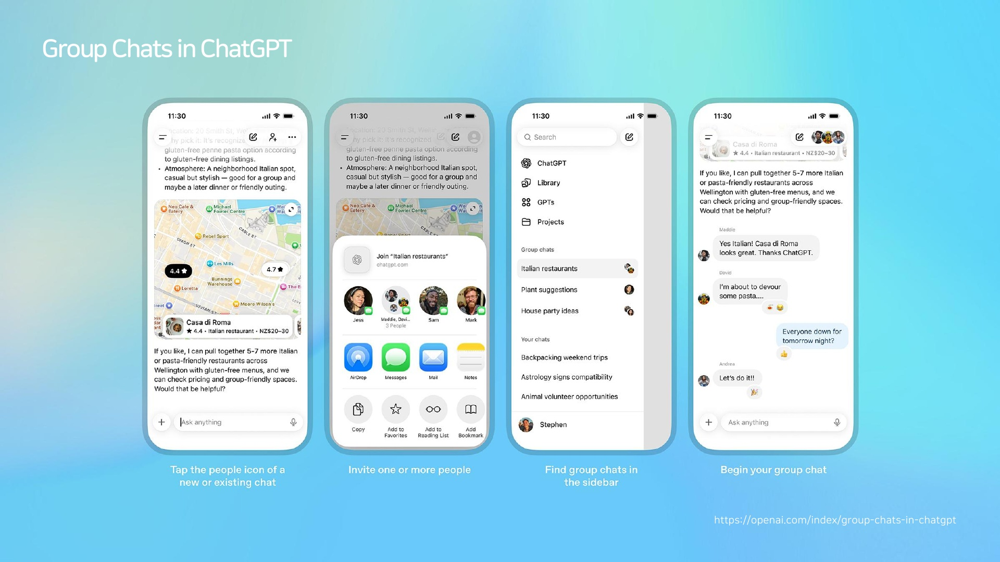
표정과 목소리까지 함께 읽어 반응하는 대화 플랫폼도 같은 방향이다. 화면 안의 상대가 내 말을 듣는 게 아니라 내 상태를 본다. 텍스트만 오갈 때는 도구라고 부르기 쉬웠는데, 상대가 내 얼굴을 보고 속도를 늦추면 그렇게 부르기가 어려워진다.
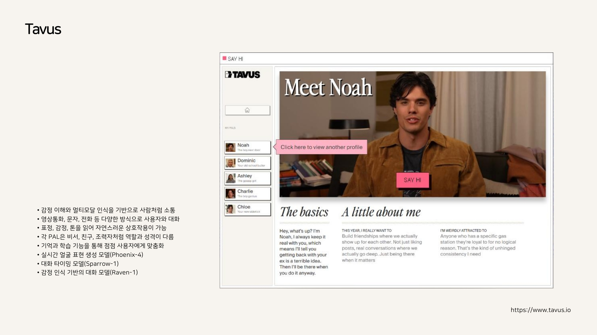
이쯤 되면 1부의 질문과 다시 만난다. 실력과 노력의 가치는 어디로 가는가. 적어도 한 가지는 말할 수 있을 것 같다. 가치는 결과물 하나하나에서, 그 결과물들이 생겨나고 이어지고 관계 맺는 조건 쪽으로 이동하고 있다. 그리고 그 조건을 다루는 일이 다음 편의 주제다. 발표에서 나는 그것을 프롬프트라고 불렀다가, 곧 워크플로우라고 고쳐 불렀다.
창작이 쉬워진 시대가 아니라, 창작의 어디가 어려운지가 바뀐 시대다.